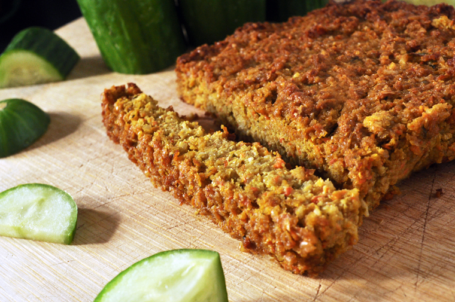

miso veggie pate
4 blocks — 60 minutes
Végé pâté is a quebec staple food, it's also one of those things that most people never think to make yourself. Every picnic I had this summer included this, it's great with veggies, on crackers and in sandwiches too! Purchasing it pre-made can be expensive, and not all brands are good. This summer, I decided to learn to make it myself.
Recommendations
A lot of végé pâté recipes call for whole wheat flour, I've made pâté with it before with great results. If you don't have oats, you can use whole wheat flour instead. Using oats as a substitute works great, I always have a bucket-load of rolled oats lying around. To grind the rolled or quick oats oats down into flour, I use my mortar and pestle, but a handstick blender would work well too.
 sunflower seeds1 cup
sunflower seeds1 cup carrots1 large
carrots1 large pumpkin1/3 cup, cubed
pumpkin1/3 cup, cubed garlic2 cloves
garlic2 cloves ginger root1 tbsp
ginger root1 tbsp scallions2 branches
scallions2 branches coriander1/4 cup
coriander1/4 cup nutritional yeast1/4 cup
nutritional yeast1/4 cup rolled oats1/2 cup, ground
rolled oats1/2 cup, ground soy sauce2 tbsp
soy sauce2 tbsp lemon juice1 tsp
lemon juice1 tsp white miso2 tbsp
white miso2 tbsp water1/3 cup
water1/3 cup black pepperpinch
black pepperpinch
veggie pate
- Soak sunflower seeds in water, for 1-2h (ref).
- Preheat oven to 350F.
- Put a few inches of water in a pot, add steamer basket and bring to a boil. Add 1/3 cup of peeled pumpkin cubes (or sweet potato). Cover, and let steam until softened.
- Combine sunflower seeds with 1/2 cup of finely ground oats, 1 large diced carrot (or two medium), the pumpkin (or sweet potato), 2 minced cloves of garlic, 1 tbsp minced ginger root, 2 chopped scallions, 1/4 cup fresh coriander, 2 tbsp soy sauce, 1 tsp lemon juice, 2 tbsp white miso and 1/3 cup of water. Purée with a food processor until smooth.
- Stir in 1/4 cup of nutritional yeast, and season with black pepper to taste.
- Put in a greased 8x8 pyrex baking dish, pour mixture in and flatten it with a spatula.
- Bake for 50 minutes, let cool. Cut into 4 squares and store in the refrigerator. Best eaten the next day! Keeps for a week in the fridge, up to a month frozen.